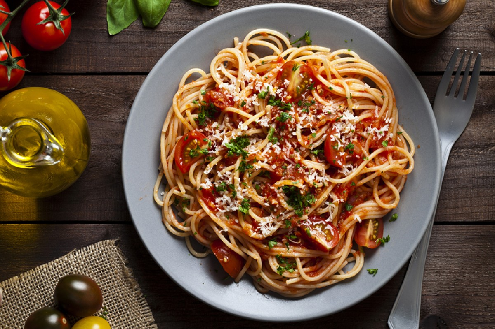

Spaghetti all'Arrabbiata

Description
A Roman classic dish, spaghetti all'arrabbiata is enjoyed throughout Italy.
Arrabbiata literally means 'angry' in Italian, referring to the sauce made
with tomatoes and hot red chili peppers that packs a spicy kick.
Ingredients
- 1 Lb. spaghetti
- 14 OZ. of tomatoes, crushed
- 1 OZ. of onion, chopped
- black olives
- capers, rinsed
- chili pepper
- basil
- extra-virgin olive oil
- salt
Steps
- Bring water to a boil in a 6 qt. pot. Season with salt. Add the spaghetti.
- Meanwhile, heat 3 Tbsp. olive oil in a large saucepan over medium-high heat.
- Add the onion, a whole chili pepper, a dozen olives, and 1 Tbsp. capers and sauté 3 minutes.
- Add the tomatoes and cook for around 5 minutes until the sauce thickens.
- Drain the spaghetti when cooked to al dente and toss quickly in the saucepan.
- Transfer to a bowl and serve garnished with fresh basil.